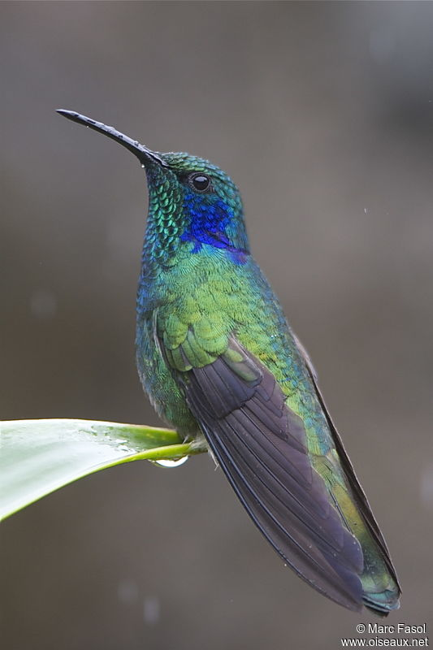

Abdoulaye Bayo
Ajouter des personnes à un projet en retard acrroît son retard
Calme

| Anniversaire | Couleur préférée | Plat préféré | Ananas sur la pizza |
|---|---|---|---|
| 15/03 | Bleu | Salade |
|
- Roblox
- afs
- legend:Rewritten
- Awtd
- Web-Dev
- html
- css
- js
- git, github
Il était une fois, une fille se promenant sur un chemin verdoyant au bord d'un fleuve scintillant sous le soleil, quand soudain ! L'envie d'évacuer tout ce liquide ingurgité au cours de sa balade lui prenna. La fille se dit à ce moment: "Voilà une heure de route avant de rentrer, puis zut, rien de tel qu'un pipi nature n'est-ce pas ?", elle lança le processus, popotin à l'air, quand soudain elle entendit un sifflement venant de l'autre côté de la rive, suivi d'un obcsène commentaire, ou compliment ? "Belle paire de fesses !", heureusement pour la pauvre fille, l'auteur de ce sifflement était une vieille femme, mais la fille n'osa plus décamper de son arbre qui la cachait.
Abdoulaye